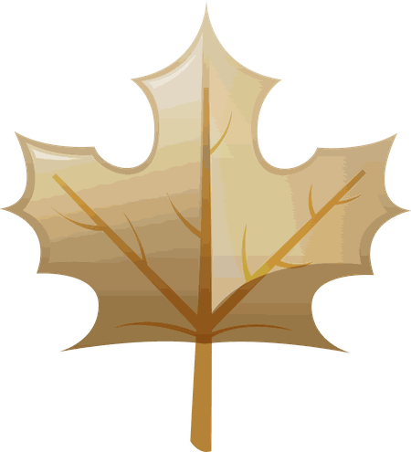

Free tools
Tools you can open,
not claims you must trust.
Everything here is free and public by design. The tailoring, which is how each tool bends to a specific organisation, is the part I keep in the kit bag.

The AI Dictionary
My field guide to twenty-seven AI terms, organised by where you will actually meet them: in discovery, in delivery, in the risk register, in the boardroom. Every entry ends with the question worth asking in your next meeting. Share it with your team.
Open the AI Dictionary
The Product Leadership Toolkit
Diagnostics, strategy and coaching resources for product leaders, maintained in the open on GitHub. Fork it, use it, tell me what broke.
Open the toolkit
Field notes
Working essays on product craft, ways of working, and AI in practice. Undated and unattributed on purpose, drawn from the inside of real buildings.
Read the field notesComing to this shelf
An AI-era product capability assessment, workshop templates, and a build guide for classroom GPTs. Requesters of my CV hear first when they land.
Join the listIf the tools help, we will probably work well together. Here is how that works.